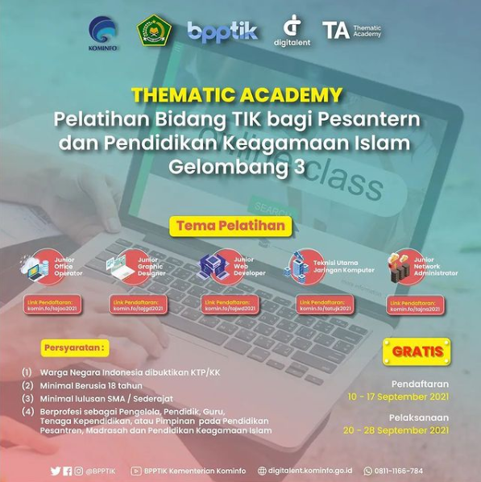

Home
Pelatihan
Sertifikasi
Jadwal
Berita
Artikel
Profil
Profil Singkat
Sejarah
Tugas dan Fungsi
Galeri
Foto
Video
Menu
Pelatihan
Sertifikasi
Jadwal
Berita
Artikel
Konten Terbaru
Pengumuman Tentang Hasil Seleksi Calon Peserta Pelatihan dan Sertifikasi Kompetensi Bidang TIK Berbasis SKKNI Secara Online Tahun 2021 Gelombang Ke-8
15 September 2021
Dibuka, Pendaftaran Pelatihan dan Sertifikasi Kompetensi Bidang TIK Berbasis SKKNI Online Tahun 2021 Gelombang ke-8
7 September 2021
BPPTIK Selenggarakan Tasyakuran sekaligus Perpisahan Pegawai yang Memasuki Masa Purna Tugas
7 September 2021
...

...
...
Previous
Next
Berita
Pengumuman Tentang Hasil Seleksi Calon Peserta Pelatihan dan Sertifikasi Kompetensi Bidang TIK Berbasis SKKNI Secara Online Tahun 2021 Gelombang Ke-8
15 September 2021
Dibuka, Pendaftaran Pelatihan dan Sertifikasi Kompetensi Bidang TIK Berbasis SKKNI Online Tahun 2021 Gelombang ke-8
7 September 2021
BPPTIK Selenggarakan Tasyakuran sekaligus Perpisahan Pegawai yang Memasuki Masa Purna Tugas
7 September 2021